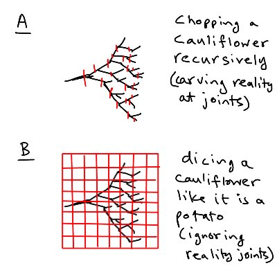
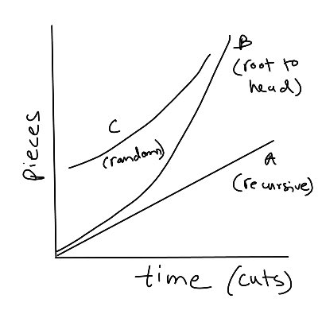

77. Anti-network effects
June 22, 2021
In which I define anti-network effects using a cauliflower as my central metaphor — contrasting topology-aware recursive chopping with grid-dicing that destroys network structure — connecting this to legibility, Deleuze, max-flow min-cut, and authoritarian high modernism.
What’s the opposite of a network effect?
Not merely a negative network effect like a contagion or failure cascade. That’s just point of view/subjective. Possibly a positive one for someone else.
A true opposite on the spirit of “the opposite of love is not hate but apathy.”
Not merely a negative network effect like a contagion or failure cascade. That’s just point of view/subjective. Possibly a positive one for someone else.
A true opposite on the spirit of “the opposite of love is not hate but apathy.”
Here’s an example I came up with. A cauliflower is a physical trace of a network effect.
How do you chop a cauliflower properly? Doing it recursively, “carving reality at the joints” is a negative network effect.
But dicing like it’s a cauliflower is an anti-network effect.
How do you chop a cauliflower properly? Doing it recursively, “carving reality at the joints” is a negative network effect.
But dicing like it’s a cauliflower is an anti-network effect.

In the picture above, recursive chopping is a way to “hate” the cauliflower topology. It is topology-aware. A kind of love really, though you’re destroying it.
B is indifferent to it. Dicing into a regular grid like a potato throws away the network effect.
B is indifferent to it. Dicing into a regular grid like a potato throws away the network effect.
If you actually try, you’ll notice that A takes more time but is much cleaner, resulting in roughly even-sized florets in a narrow distribution with structural integrity. Depending on how deep you take the recursion, you can get median size of florets between 1/2” to 2”.
More than 2” and you’re not really chopping, more like making small cauliflowers. Less than 1/2” and you’re running into the too-small floret fringe
This method is good for high-quality cauliflower dishes.
This method is good for high-quality cauliflower dishes.
Method B is faster but much messier as you get to the head-surface of the cauliflower. Your dicing grid will be too coarse and the tiny florets will fall apart into crumbles.
This is terrible. A method that’s only good for horrible, wasteful dishes like mashed cauliflower.
This is terrible. A method that’s only good for horrible, wasteful dishes like mashed cauliflower.
How to generalize this example of dicing a cauliflower as an anti-network effect? Features:
1. It is lossy, information-wise
2. It is fast
3. It creates debris (more pieces than your grid cell count)
That last feature is a measure of the entropy introduced.
1. It is lossy, information-wise
2. It is fast
3. It creates debris (more pieces than your grid cell count)
That last feature is a measure of the entropy introduced.
If you take a simple object and make p cuts along one dimension, you get n=p+1 pieces
If you take a “network” object and make p cuts, you can get n> p+1 pieces.
Maybe n-p-1 is a good proxy of entropy?
In 2d with p, q cuts, you’ll get (p+1)*(q+1) pieces with no entropy.
If you take a “network” object and make p cuts, you can get n> p+1 pieces.
Maybe n-p-1 is a good proxy of entropy?
In 2d with p, q cuts, you’ll get (p+1)*(q+1) pieces with no entropy.
This is indirectly related to the main-cut/max-flow theorem. In a graph, the max flow between two points (source and sink, like root to floret of a cauliflower) equals the flow across the minimum cut. But what happens when you make a random cut?
Max-flow min-cut theorem - Wikipedia
Max-flow min-cut theorem - Wikipedia
Here we have to shift from a topological notion of cut (point disconnection of a graph) to geometric, Ie a graph embedding in a plane. A single knife cut on a graph equipped with a geometry is multiple topological cuts using the information of just 2 cuts (2 points define a line)
So to define an anti-network effect
a) define a network as a graph
b) embed it in a space of dimension r (2 or 3)
c) make p random geometric cuts
d) count number of pieces that result, n
e) anti-network-ness is ~= n-p^r
(I’m wild-guessing the formula in e based on grid case)
a) define a network as a graph
b) embed it in a space of dimension r (2 or 3)
c) make p random geometric cuts
d) count number of pieces that result, n
e) anti-network-ness is ~= n-p^r
(I’m wild-guessing the formula in e based on grid case)
You could apply Nakatomi space theory. How would Bruce Willis have dealt with the Die Hard situation if Nakatomi tower had been an ever-expanding warren of ever-smaller tunnels? A cauliflower space? Die Hard 2 was almost that (tunnels under airport) Nakatomi Space – BLDGBLOG
Manaugh explicitly connects Nakatomi space theory to Deleuze and Guattari via IDF military tactics in the linked article. But buildings and cities are not quite rhizomatic imo. They have arborescent topologies, and so busting through walls does too.
A cauliflower is a poor metaphor discussing D&G connection since it is literally arborescent. That was just to illustrate graph-chopping. Take a more general graph like the human circulatory system or something.
“Drawing and quartering” a human is… an anti-network effect.
“Drawing and quartering” a human is… an anti-network effect.
This is getting a bit esoteric, but one final point. I’m mainly interested in the time dimension. Network effects grow graphs via superlinear processes. Cauliflower ontogeny in terms of branch count is probably something like 1, 2, 4, 8, 16…. or something like that.
The two chopping processes though, look different in time.
A is isentropic but slow. Each cut takes a bit of time, since you process information.
B is fast, and transitions from isentropic to entropic if you work root-to-head, or evenly entropic if you hack randomly.
A is isentropic but slow. Each cut takes a bit of time, since you process information.
B is fast, and transitions from isentropic to entropic if you work root-to-head, or evenly entropic if you hack randomly.
Edit: random chopping would also be increasingly entropic I think, since later cuts would produce more debris generally.
You could make a graph of cuts vs pieces to track this.
You could make a graph of cuts vs pieces to track this.

The creation of debris suggests that anti-network effects share features with explosions of crashes even if they are more controlled processes. I’ll have to think about this.
But punchline… a lot of management is a destructive anti-network effects!
This is the core of how legibility-seeking unleashes destruction. The authoritarian high modernist dices cauliflower like potato. Many visual examples in Seeing Like a State. A Big Little Idea Called Legibility
This is the core of how legibility-seeking unleashes destruction. The authoritarian high modernist dices cauliflower like potato. Many visual examples in Seeing Like a State. A Big Little Idea Called Legibility